Capítulo 3 Uso y preparación de los datos
A la hora de iniciar cualquier estudio debemos tener en cuenta que sin un buen conjunto de datos la mayoria de las técnicas que implemateremos no daran resultados óptimos, en general no prestamos atención a esto, y no entendemos por que nustros análisis no se acercan ni un poco a la realidad que representan los datos. La existendia de puntos atípicos y entradas sin datos, o con errores pueden ser una verdadera pesadilla a la iniciar nuesdtro estudio, es por esto que debemos de saber manejar de manera correcta las herramientas que nos ofrece el lenguaje en el que estemos trabajando para solucionar estos problemos. En esta sección estudiaremos lo cualquier especialista en esta área debe hacer al tener que iniciar un projecto con un conjunto de datos con los que no esta familiarizado.
3.1 Lectura de datos
En general hay tres tipos de datos basicos con los cuales nos enfrentaremos, los cuales son archivos con extensiones .csv, .txt, xls. Existen otras extensiones pero es muy raro que tenga que trabajar con datos provenientes de ellas, estas extensiones pueden ser: .docx, .pdf, entre otras
3.1.1 Lectura de datos con R
RStudio nos facilita mucho esta tarea, pues tiene una opción que nos permite cargar los datos y escoger la configuracion del archivo sin tener que programar, veremos como hacer esto de forma directa y luego de manera adicional presentaremos algunas funciones que hacen esta misma tarea.
- Archivos csv o txt: Primero buscamos en las opciones que se encuentran disponibles en la parte superior de RStudio y selecionamos archivo o file, luego se desplegaramn varias opciones de las cuales debemos seleccionar Import Dataset o importar datos, recomendamos utilizar la opción From Text (readr)…, debido a su alta variedad de opciones para cargar los datos.
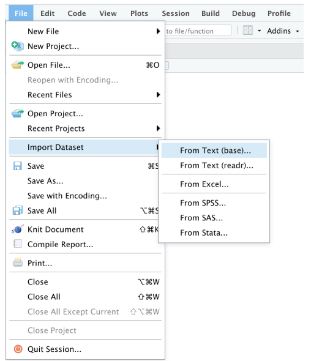
El paquete readr nos permite seleccionar las siguientes opciones
Cargar archivos directamente desde una ruta de nuestro computador o de una dirección web.
Seleccionar con un simple click el tipo de datos de alguna columna en particular.
Mantener o eliminar columnas.
Cambiar el nombre al conjunto de datos.
No usar una cantidad \(N\) de las primeras filas del conjunto de datos.
Usar el encabezado como nombre de las columnas
Recortar espacios en los nombres
Cambiar los delimitadores de las columnas (separadas por comas, puntos y comas, tabulaciones, guiones, etc).
Seleccionar la codificación de los datos.
Identificar de alguna forma en particular los valores Na
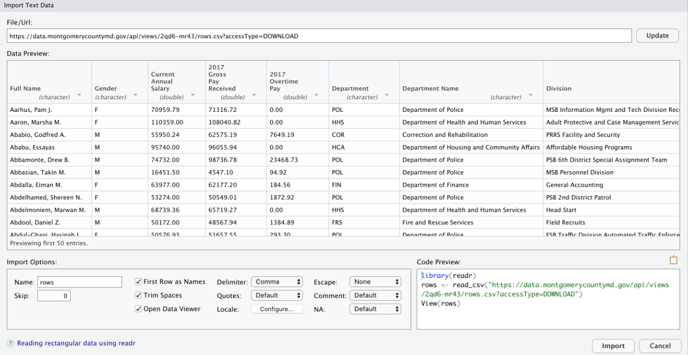
- Archivos .csv o .txt (opcion básica): R pase de manera predeterminada formas de leer archivos .csv y .txt, pero con menos opciones como las que nos ofrece el paquete readr. Aunque no paresca en algunas ocaciones desearemos usar esta opción debido a que ya hemos realizado algun análisis previo con los datos y para evitar que la versión de RStudio pueda cambiar algun componente de nuestros datos es preferible usar la versión base. De igual forma que la forma de cargar los datos presentados previamente tendremos varias opciones, las cuales se resentaran en la parte derecha del cuadro una vez seleccionemos la opcion base
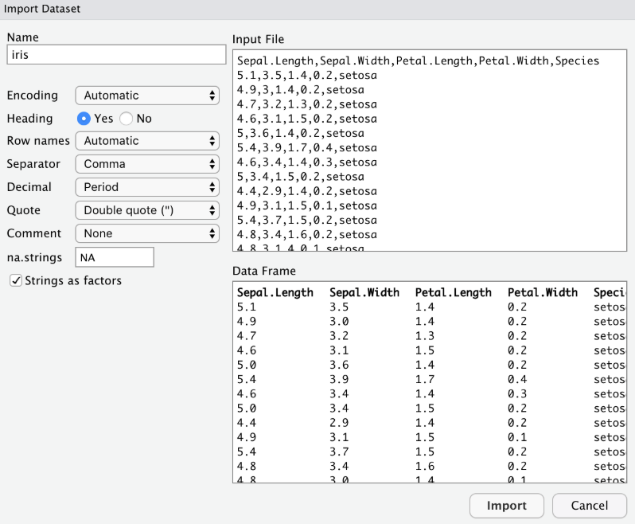
- Archivos .xls (excel): Para cargar archivos .xls debemos seleccionar la opción From excel que se encuentra en la misma ubucación de las anteriores. Esta opción usa el paquete readxl. La ventaja de este paquete es que posee practicamente las mismas opciones que los paquetes anteriores y ademas nos permite seleccionar la hoja de cálculo a usar del documento excel. Por ejemplo la siguiente imagen representa lo que en general encontraremos al cargar el archivo
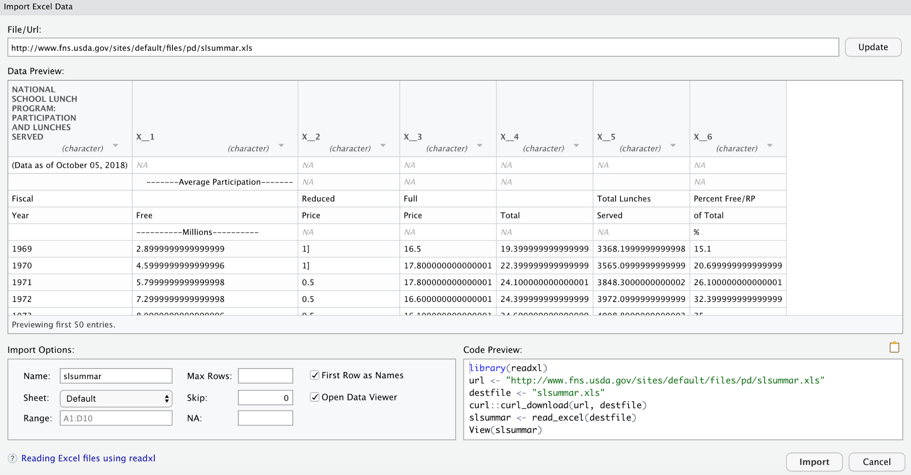
Gracias a readxl podemos simplicar y mejorar los datos como represent la siguiente imagen.
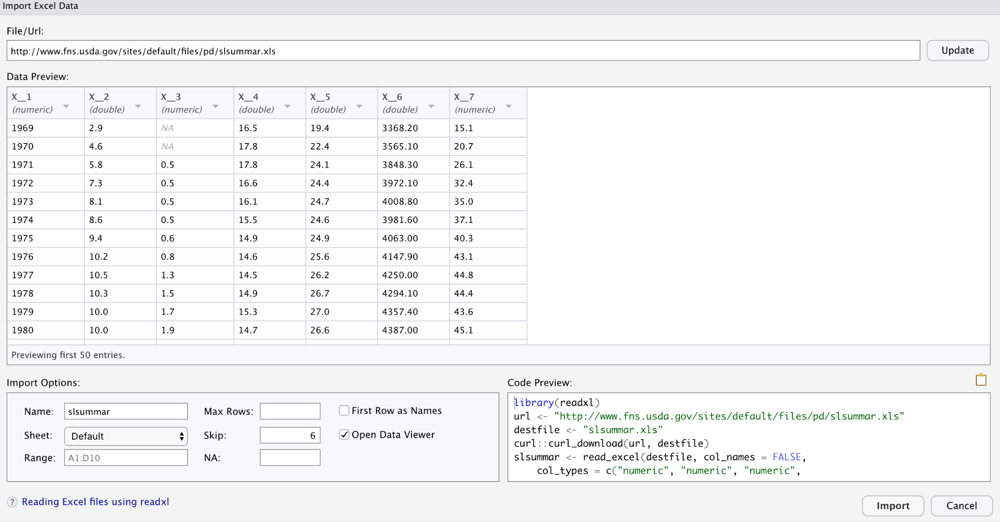
Como vimos, RStudio nos permite leer archivos .txt, .csv y .xlx con dos paquetes readr, readxl, ahora nos concentraremos en entender como funcionan estos paquetes, existen funciones que vienen por defecto con R tales como: read.csv, read.csv2, read.table, read.delim, entre otras pero con los dos primeros paquetes tendremos todo lo que necesitamos para iniciar.
Leer archivos .csv o .txt con readr, sin la ayuda de RStudio: El paquete readr nos proporciona las funciones read_csv(), read_delim(). La funcion read_csv() como su nombre lo indica su uso es para leer archivos con extensión .csv y la función read_delim() nos permite leer archivos con extensión .txt
Leer archivos .xlx (excel), sin la ayuda de RStudio: El paquete readxl nos ofrece la función read_excel() esta función, acepta practicamente los mismos parametros que las funciones anteriores con el parametro adicional “Sheet” el cual es necesario para poder saber en que hoja del documento se esta trabajando.
3.1.2 Lectura de datos con Python
Como se ha mencionado antes, debido a la gran variedad para lo cual esta destinado el lenguaje Python existe una gran cantidad de formas de leer archivos .csv, .txt, .xlx. En concenso con la gran mayoria de los especilistas en Machine Learning en este lenguaje, la libreria Pandas es la de uso mas comun para la manipulación de datos, es por esto que usaremos la funciones que nos ofrece pandas, mas en concreto pandas.read_csv() pandas.read_excel(). A diferencia de RStudio no hay una forma en común para cargar los archivos, sin que tengamos que escribir algunas lineas de codigo, a continuación mostraremos como hacerlo, ambas funciones aceptan una gran cantidad de parámetros, solo mencionaremos los mas importantes, para mayor información https://pandas.pydata.org/pandas-docs/stable/reference/api/pandas.read_csv.html o https://pandas.pydata.org/pandas-docs/stable/reference/api/pandas.read_excel.html.
- Leer archivos .csv o .txt con pandas.read_csv():Primero debemos saber que al cargar el archivo con pandas obtendremos un archivo del tipo pandas.Dataframe practicamente igual al que se obtiene al cargar archivos con R. La función acepta los siguientes parámetros:
filepath_or_buffer: Ruta del archivo o dirección web.
Sep: valor que separa los datos, por defecto es una coma
header: Se usa para identificar en que posición se encuentra la fila que será usada como los nombres de las columnas.
names: Lista con el nombre de las columnas a usar.
index_col: Columna que será usada por defecto como indice
decimal: Caracter que sera usado como caracter decimal, por defecto es un punto
usecol: este parametro nos permite decidir que número de columnas a usar.
dtype: Tipo de dato de cada columna, por ejemplo {‘a’: np.float64, ‘b’: np.int32, ‘c’: ‘Int64’}
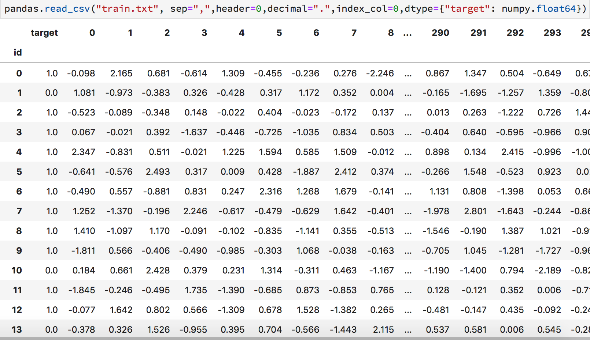
- Leer archivos .xlx con pandas.read_excel(): Practicamente usa los mismos parametros que la función anterior, con la diferencia de que no acepta el parametro sep y usa un parametro adicional llamado sheet_name, este parametro debe ser una lista con los números de columnas a usar o con los nombres.
3.2 Tratamiento previo de los datos
A la hora de cargar los datos es que puede empezar la verdadera pesadilla para poder intentar aplicar los métodos, esto es debido a que existen factores que pueden causar problemas a la hora de escribir los datos, entre los mas comunes estan errores de medición, problemas de codificación y errores humanos. En general clasificaremos estos problemas en dos grupos Missing Values y Outliers
3.2.1 Missing Values o valores faltantes
Estos valores suelen generarse por diversas razones, entre las cuales se encuentran: problemas de codificación con los datos, errores de medición, errores humanos, etc. En algunos casos pueden generarse por problemas con la función que este encargada de leer los datos, esto se debe a que capaz no se esta leyendo bien los parametros o simplemente el archivo no es compatible. En esta sección veremos cuales son las técnicas mas usuales para solucionar estos problemas.
- Missing values en Python: Para identificar valores en python a traves de ls libreria pandas existen diversas funciones que nos ayudaran. Lo primero que debemos hacer es contar la cantidad de datos faltantes, esto lo hacemos con las funciónes isnull() y sum() de la libreria pandas, el resultado final será el numero de missing values por columnas, la primera función los identifica y la segunda función los cuenta,en la siguiente imagen se muestra como hacerlo.
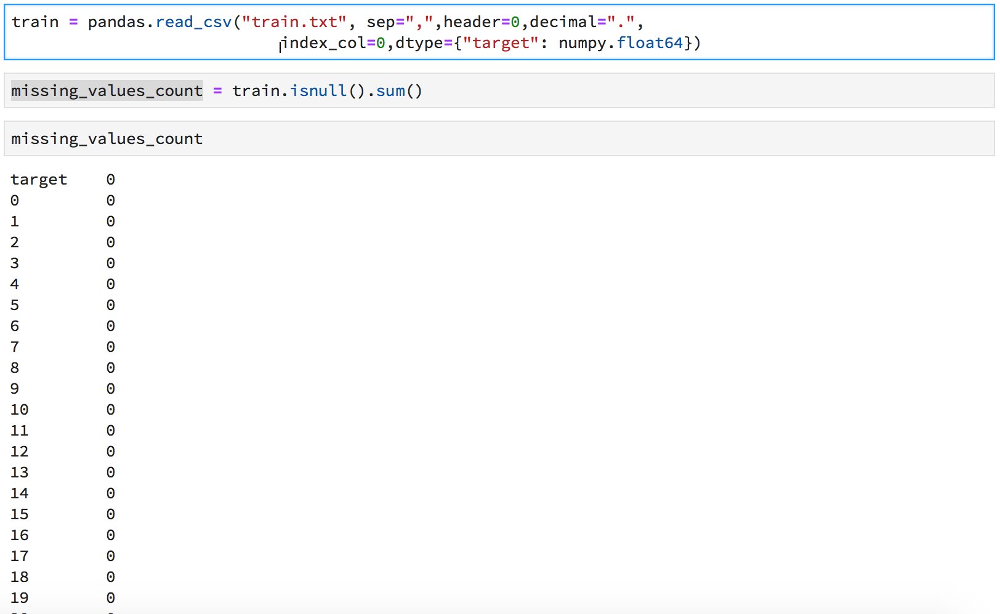
En general, los valores faltantes tienden a eliminarse, pero esto no se puede hacer a la ligera, en otros cosos suelen sustituirse por un valor comun del conjunto de datos (esto se hace cuando tenemos distintas entradas para un individuo y alguna característica esta vacía). Tambien algo que se debe chequear es si la distribución de datos faltantes es aleatorio, fuera muy extraño que cada 100 datos exactamentes halla un dato faltante en un lugar en específico, este tipo de comportamiento hace pensar en que estamos en presencia de dato artificiales.
Como trartar estos, depende de nuestros propositos en especificos, pues los datos faltantes tienden a segar de manera considerable muchas técnicas estadísticas. Cuando deseamos no usarlos decimos que los eliminaremos y cuando deseamos sustituirlos por un valor en específico diremos que lo imputaremos.
Para eliminar los datos faltates sin riesgo a perder información vital, lo primero que debemos asegurarnos es que la proporción de estos datos con el total sea muy bajo, por ejemplo \(300:1\), si los valores faltantes representaran el \(1\)% de la población no es muy recomendable que lo eliminemos, pues un ejemoplo típico es que pudieran representar un segmento de la población que por problemas de medición o de transmisión de los datos simplemente no se pudo completar el llenado de información y el eliminarlos pudiera dejar por fuera una parte importante de la población. El \(1\)% no parece significativo, pero si tenemos 3 millones de datos el \(1\)% representaría \(300\) mil una cantidad considerable, de posibles consumidores para productos en específico.
Ahora si decidimos elimar los datos, realizar esto en python es sencillo, primero calculamos el porcentaje de datos faltantes usaremos las funciones pandas.shape, pandas.product(), la primera nos dice la dimension del dataframe y la segunda realiza la multiplicación para poder saber la cantidad de celdas que existe.
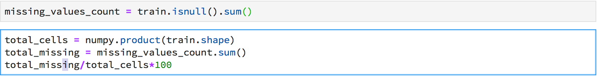
Ahora, dependiendo como esten organizados los datos, es decir, registros por columnas o por filas, sabremos como eliminar los registros con valores faltantes. La función df.dropna(), si colocamos como parámetros axis=0 se eliminaran los registros por fila que contengan valores faltantes y axis=1 por columnas.
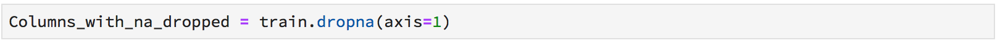
Ahora, la otra alternativa con los datos faltantes es imputarlos, existen diversas técnicas para esto, solo veremos las mas comunes; imputacion por la media, por la mediana, por la moda. Existen técnicas para estimarlos a traves de modelos estadísticos, pero esto pudiera ser complicado y es tema de un curso mas especializado a este tópico.
- Sustitución por la media: Cuando los datos poseen un comportamiento uniforme alrededor de una region del plano se suele sustituir por el valor medio de que presentan los datos.
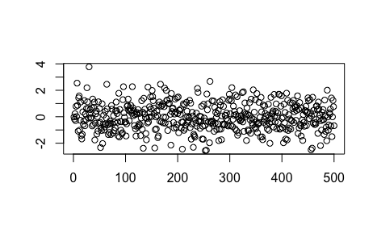
Para sustituir por el valor medio la función .mean() para calcular el valor medio de la columna y la función .replace() para realizar el cambio.
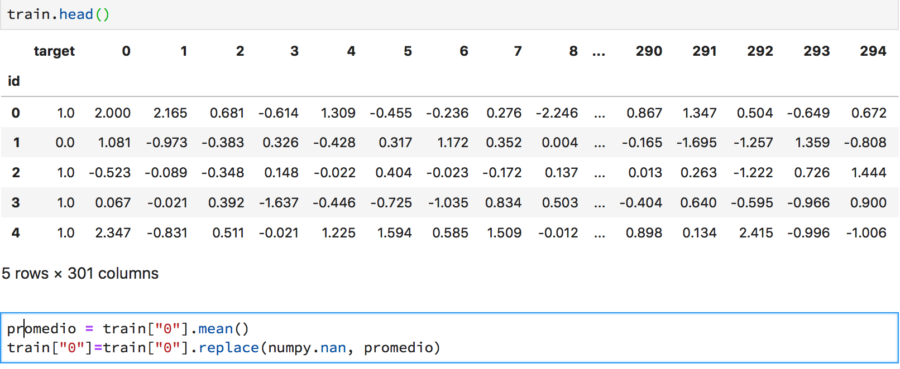
- Sustitución por la mediana:
El problema de sustituir por la media es que esta se puede ver afectada por valores atípicos (los veremos en la proxima sección de este capítulo), es por esto que tiende a sustituirse por la mediana que es un estimador mas robusto para este proposito. Por ejemplo, el conujunto de puntos \(1, 2,3,1,2,1,3,1,2,1,2,1,33\) tiene promedio 4, sustituir por este valor no tiene sentido, mientras que la mediana es 2.
Para realizar el cambio usamos .median()
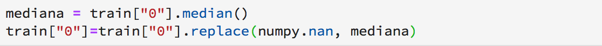
- Sustitución por la moda: La sustitución por la moda es especialmente útil cuando estamos en presencia de datos categoricos, recordemos que la moda no es mas que el dato que mas se repite en el conjunto de datos.
Para realizar el cambio usamos .median()
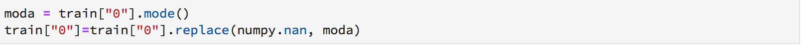
- Missing values en R: Ya hemos mencionado en la parte anterior como trabajar con datos perdidos, al igual que en R contaremos la cantidad de datos faltantes, para ello usaremos la función sapply la cual permite aplicar funciones columnas de manera explicita, en nuestro caso applicaremos la función is.na() la cual cuenta la cantidad de valores faltantes por columnas y la función sum() suma todos estos valores y nos de el resultado final, la función dim() nos da como resultado las dimensiones de la data.
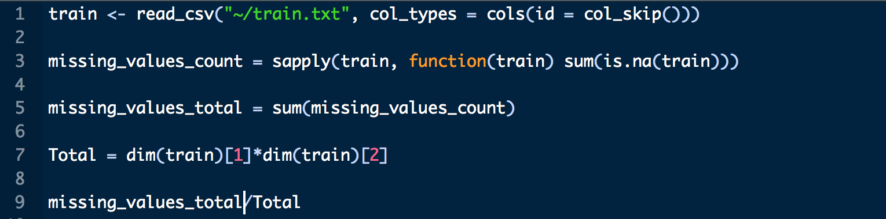
Para eliminar los valores faltantes de la data por filas, usamos la función na.omit(), si queremos eliminar por columnas usamos la función t() la cual nos traspone los datos, el problema es que se nos modificara el indice por lo que debemos solventar este problema con la función rownames, otro detalle es que la función na.omit() cambia el formato de los datos, por lo que con la función as.data.frame() solucionamos este problema.
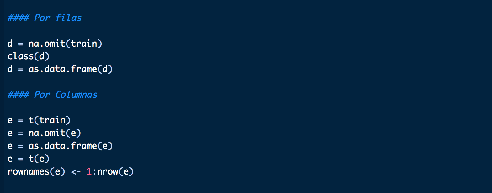
Ahora imputaremos los datos faltantes al igual que en python:
- Sustitución por la media: En R el comando para calcular la media de un conjunto de datos es mean() y con la función is.na() la cual retorna las pocisiciones donde se encuentran los vaklores faltantes.
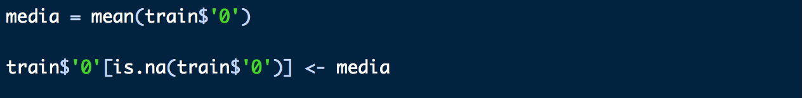
- Sustitución por la mediana: De forma similar es con la mediana, solo que en este caso la función para hallar la mediana es median()
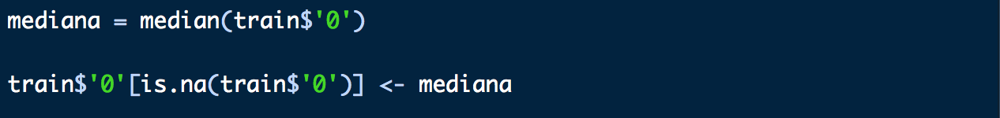
- Sustitución por la moda: En este caso no existe una función que venga por defecto en R que calcule la moda, sin embargo, descargando la libreria moodest y usando la función mfv() logramos nuestro proposito:
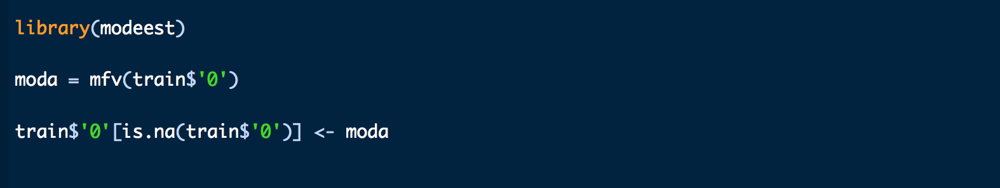
3.3 Identificación y tratamientos de Outliers o puntos atípicos.
Los puntos u observaciones atípicas como su nombre lo indica son observaciones que tienen un comportamiento distinto al de las demas observaciones, por ejemplo en el conjunto de datos 2, 3, 2, 4, 3, 2, 34, 3, 2, 1, 2 el valor 34 es un punto atípico. Existen varias razones fundamentales para lo cual es vital detectar estas observaciones entre las que podemos mencionar estan:
Detectar errores en los datos: Si estamos observando un conjunto de datos donde en una colummna denotamos la edad de los individuos y un individuo tiene en esa entrada -5 o 335 claramente existe un error en los datos
Encontrar un subconjunto distinto dentro del conjunto original: En algunos casos los valores atípicos señalan la existencias de individuos en particular, cuya existencia puede ser importantes en nuestros estudios.
Para evitar estimaciones incorrectas en algunos modelos estadísticos: Algunos modelos estadisticos tienen fuertes restricciones en las hipotesis, es por esto que la eliminacion de algunos puntos atípicos puede mejorar de manera significativa nuestros resultados.
3.3.1 Identificación de puntos atípicos.
Estudiaremos los dos enfoques mas populares: el visual y el cuantitativo
- Visual: Como su nombre lo indica consiste en analisar los datos de manera visual para identificar los valores atípicos. Por ejemplo, en la siguiente imagen podremos notar claramente un par de valores atípicos:
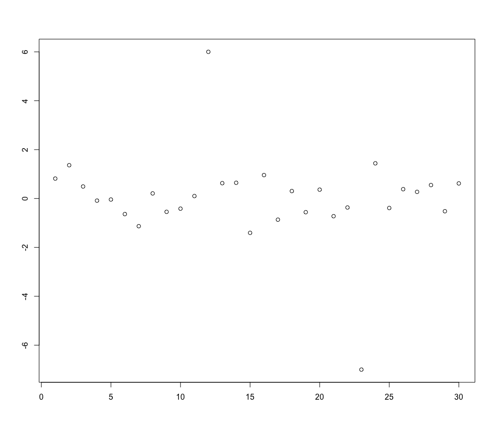
El problema se complica cuando aumenta la dimensionalidad del conjunto de datos, es decir, aumenta las categorias que poseen las observaciones. Por ejemplo, supongamos que tenemos un conjunto de datos con tres categorias x1, x2, x3, x4, en este caso lo estandar es graficar el cruce de las variables para encontrar valores atipicos, el problema es que algunos cruces pueden no mostrar nada anormal, como es el cruce entre las variables x1 y x2.
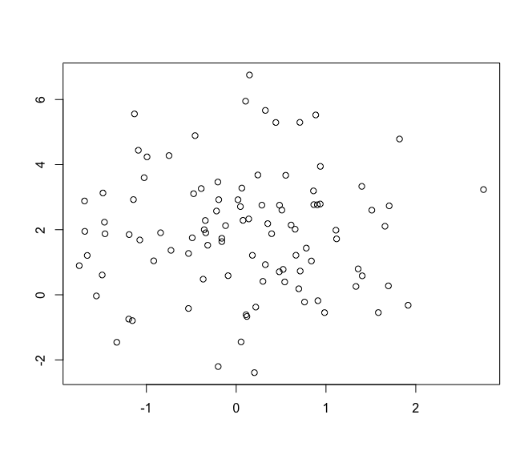
Pero al observar el cruce ente las variables x1 y x3 se puede detectar rapidamente el punto atípico
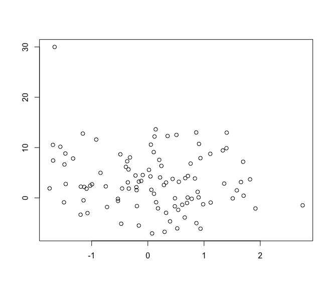
Ahora, es claro que este método puede ser muy inifeciente a la hora de tener que trabajar con una gran cantidad de atributos, es por eso que existe la necesidad del uso de algun método cuantitativo para poder medir de alguna forma si un dato es atipico o no. Veremos solamente el meétodo basado en la medida o distancia \(D^2\) de Mahalanobis
- \(D^2\) de Mahalanobis: Es una medida de distancia intriducida por Prasanta Chandra Mahalanobis y su principal uso era determinar la similitude entre dos variables aleatorias, su gran caracterísitica es que usa la matriz de covarianza para dar un peso ponderado por esta matriz a cada variable. Su gran desventaja es que es sensible a las escalas de los datos, por lo que se sugiere escalar los datos ya sea por su media o otro criterio similar.
En general, debemos tener un punto de referencia para poder medir la proximidad de los puntos que estamos midiendo, lo común es usar la media o la mediana, la ecuación que representa la distancia \(D^2\) de Mahalanobis es :\[\sqrt{(x-y)^{T} \Sigma^{-1}(x-y)}\] donde \(y\) es el punto fijo de referencia, \(x\) es el punto al que le estamos calculando la distancia y \(\Sigma\) la matriz de covarianza.
3.3.2 Deteccion de outliers en R
- Visual: Supongamos que tenemos el conjunto Data previamente cargado y compuesto por tres variables x1, x2 y x3. Usaremos la funcion plot(), si queremos observar la variable x1. Usamos el siguiente comando:
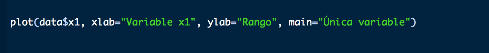
Dando como resultado:
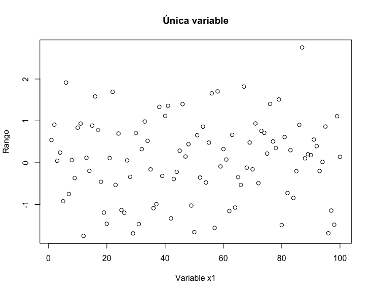
A primera vista no hay ningún valor atípico, sin embargo, si realizamos el mismo grafico para la variable x3, obtenemos claramente un outlier:
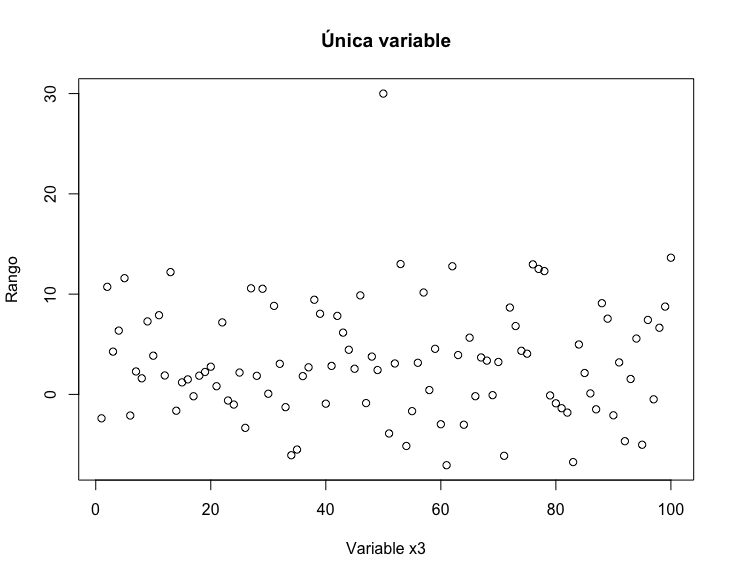
Ahora si queremos hacer el cruce de variables, usamos igual el mismo comando, por ejemplo, el de las variables x1 y x2, hacemos:
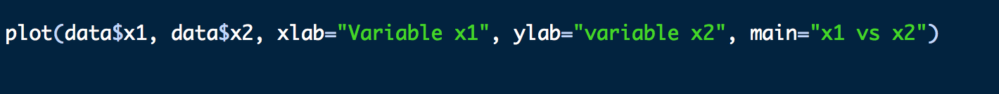
No se observan outliers aparentes, como muestran la siguiente imagen.
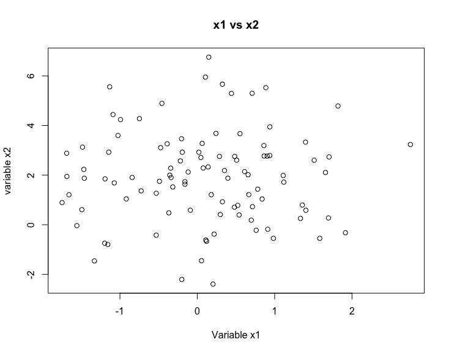
Ahora, si realizamos el cruce de las variables x1 y x3 obtenemos:
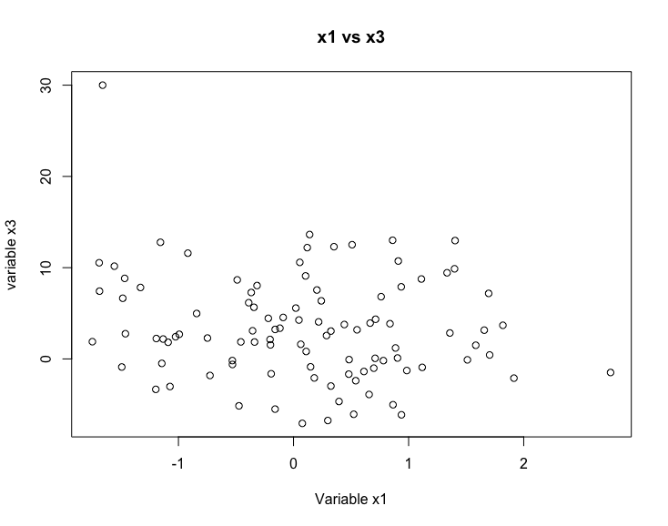
Observando claramente un outlier, que posee un valor de 30. Ahora si tenemos muchas variables, este proceso se complica, es por esto que usaremos la distancia \(D^2\) de Mahalanobis.
- la distancia \(D^2\) de Mahalanobis: Para calcular la distancia de mahalanobis debemos calcular primero el punto de referencia, en nuestro caso la media, usaremos la función apply, la función cov() para calcular la matriz de covarianza, al final usamos la función mahalanobis() indicandole los datos a calcular. Luego usamos la función plot() para ver la existencia de valores atipicos.
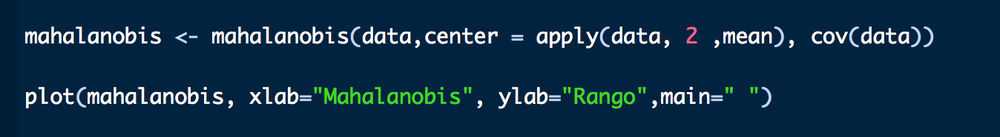
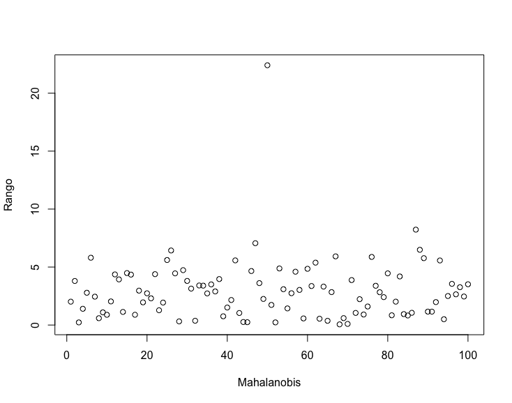
3.3.3 Deteccion de outliers en Python
- Visual: Para identificar de manera visual outliers en python haremos uso de la librería Matplotlib, la cual nos brinda un sin fin de herramientas para poder llevar a cabo nuestros fines. Al igual que en la sección anterior usaremos el conjunto de datos Data con tres variables.
Para ver la grafica de la variable x1, primero debemos seleccionar la variable, esto lo hacemos con el método .iloc() de Pandas el cual nos permite seleccionar subconjuntos de datos. Luego usamos plt.plot() para realizar la grafica de los datos, el parámetro ro indica el tipo de grafico en nuestro caso en punteado plt.xlabel para dar título al eje horizontal y plt.ylabel para dar título al eje vertical, finalmente usamos plt.show para mostrar la imagen.
Al graficar la variable x1 no notamos ningún valor particular
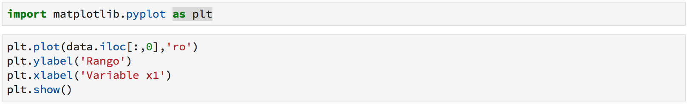
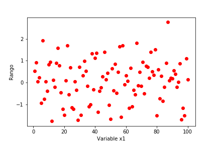
Pero cuando realizamos el plot de la variable x3 notamos el valor atípico:
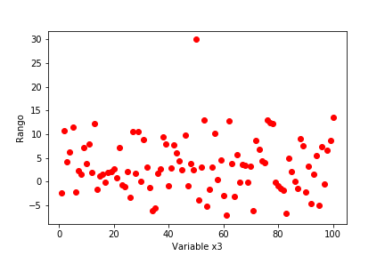
Para realizar el grafico del cruce de variables, simplemente agregamos la variable adicional como parametro en plt.plot(), podremos notar que no se ve valor atípico.
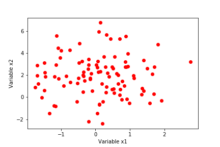
Pero al realizar el cruce con las variables x2 y x3 notamos el valor atípico.
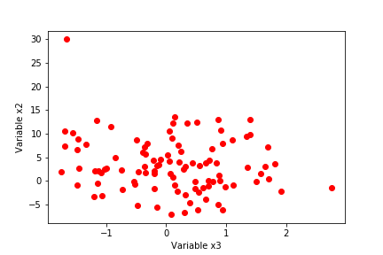
- la distancia \(D^2\) de Mahalanobis: Para calcular la distancia de Mahalanobis de un conjunto de datos usando python usaremos la librería Scipy la cual trae por defecto un función para calcular la distancia de Mahalanobis, debemos calcular la media de las columnas, para ello usamos la función .mean() de Pandas, a diferencia de R debemos calcular la inversa de la matriz de covarianza, para ello usamos la funciones .cov() (calcula la matriz de covarianza), .linalg() y .inv() (calcula la inversa), finalizamos usando la función apply de Pandas para poder aplicar la función mahalanobis() de la libreria Scipy a todo el conjunto de datos, en la función .apply() debemos colocar el nombre de la función, axis indica si la función aplica a las columnas o filas, el valor de 0 para las columnas y 1 para las filas, finbalizamos con args que contiene los parametros que necesite la función a utilizar, en nuestro caso el punto de referencia, el cual es la media por columnas y la inversa de la matriz de covarianza.
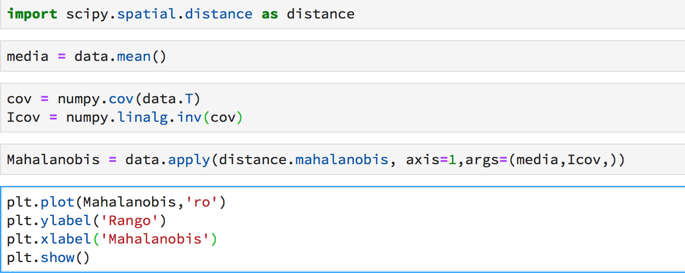
Podremos notar claramente un valor atípico en la siguiente imagen.
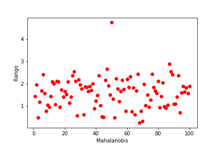